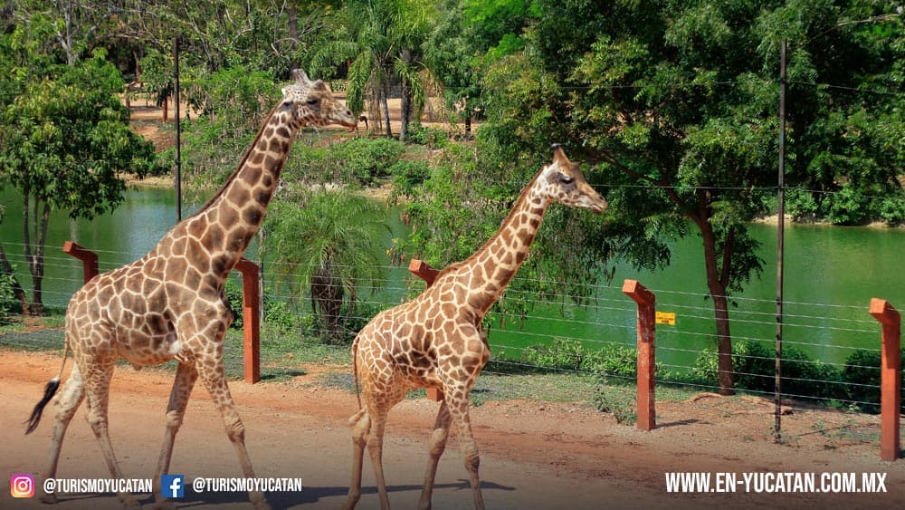

Zoológico con mamíferos y reptiles, un paseo en bote y una torre de observación inspirada en una estela maya. En este sitio es posible encontrar un panorama totalmente diferente al del parque del Centenario, ubicado en la avenida Itzáes de dicha ciudad; en Animaya se pretende brindar un ambiente similar al de un safari, pues los espacios de recreación de las especies son más grandes permitiendoles sentirse como si estuvieran en su hábitat natural, se divide en tres praderas, americana, euro-asiatica y africana. Todo bajo el concepto de una antigua ciudad maya abandonada y rehabitada por animales.
